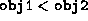

Data Structures and Algorithms
with Object-Oriented Design Patterns in Java
Data Structures and Algorithms
with Object-Oriented Design Patterns in Java
All Java classes, including arrays,
are ultimately derived from the base class called Object.
The following code fragment identifies some of the methods
defined in the Object class :
:
public class Object
{
public final Class getClass ();
public String toString ();
public boolean equals (Object obj);
public int hashCode ();
// ...
}
Notice that the Java Object class contains a method called equals, the purpose of which is to indicate whether some other object is ``equal to'' this one. By default, obj1.equals(obj2) returns true only if obj1 and obj2 refer to the same object.
Of course, any derived class can override the equals method to do the comparison in a way that is appropriate to that class. For example, the equals method is overridden in the Integer class as follows: If obj1 and obj2 are Integers, then obj1.equals(obj2) is true when obj1.intValue() is equal to obj2.intValue().
So, Java objects provide a means to test for equality.
Unfortunately, they do not provide a means to test
whether one object is ``less than'' or ``greater than'' another.
To overcome this difficulty,
we introduce the Comparable interface defined in Program  .
.
Program: Comparable interface.
The Comparable interface declares seven methods. The first six are used to test whether an object is ``less than'' (isLT), ``less than or equal'' (isLE), ``greater than'' (isGT) ``greater than or equal,'' (isGE), ``equal'' (isEQ), or ``not equal'' (isNE) to another given object. For example, given objects obj1 and obj2 that implement the Comparable interface, the expression obj1.isLT(obj2) returns true if obj1 is ``less than'' obj2.
The compare method can also be used to compare two object instances.
Given two objects obj1 and obj2,
calling obj1.compare (obj2) compares
the value of obj1 with the value of obj2.
The result is equal to zero if ;
less than zero if ; and,
greater than zero if  .
.
 Copyright © 1998 by Bruno R. Preiss, P.Eng. All rights reserved.
Copyright © 1998 by Bruno R. Preiss, P.Eng. All rights reserved.